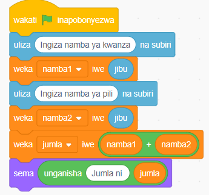

Kazi ya kufanya namba 4
Unda programu ambayo inajumlisha namba mbili zenye tarakimu sita kila moja. Unda vibadilika, vitakavyowezesha mtumiaji kuweka namba, kujumlisha na kuonesha matokeo. Zifuatazo ni hatua za msimbo:
Hatua
- 1.
Bofya bloku la Matukio kisha chagua bloku ya wakati bendera ya kijani inapobonyezwa.
- 2.
Bofya bloku la Vibadilika kisha unda vibadilika vya kuhifadhi namba ya kwanza, namba ya pili, na jumla. Vipe majina ya namba1, namba2, na jumla mtawalia.
- 3.
Bofya bloku la Hisi kisha chagua uliza ( ) na subiri kupokea maelekezo kutoka kwa mtumiaji kisha hifadhi jibu kwenye vibadilika namba1 na namba2.
- 4.
Tumia bloku la jumlisha ndani ya bloku ya weka jumla iwe ( ) kutafuta jumla kwa kujumlisha vibadilika namba1 na namba2. Hifadhi jibu kwenye kibadilika cha jumla.
- 5.
Bofya bloku la Muonekano kisha chagua bloku ya sema ( ) kuonesha jumla kwa mtumiaji. Angalia au sikiliza maelezo ya Kielelezo namba 5.
Bloku za Msimbo

Kielelezo namba 5: Kutumia vibadilika na opereta katika namba